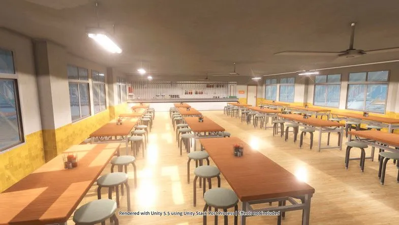

Eating Well on a Student Budget
Your first year is busy; new classes , new friends, and long days on
campus . It is easy to skip or spend ypur whole allowance on milk tea.
Eating regular meals helps you focus on class, and you
do not need a big buget to do it.
Where to Eat Near Campus
you have more options than you think. Have the usual go-to spots:
- The school canteen for quick rice meals between classes
- Carinderias outside the gate for cheap, filling ulam and rice.
- Your own baon from home, Which is the cheapest choice of all
- Convenience stores for emergency snacks, not for every meal.
How to Plan Your Weekly Food Budget.
A little planning on Sundays saves you from being broke by Thursday.
- Check how much allowanve you have for the whole week.
- Set aside money for fare and school needs first.
- Divide what what is left by the number of school days.
- Pack baon on the last two days to stretch your budget.
- Keep a small amount for emergencies, like a suprice project.
Quick Tips
Always being a refiilable water battle Water stations on campus
are free, and youn will save a lot compared to buying a bottled drinks
every day.

Photo by: Doubledou
Home
Enrollment Guide